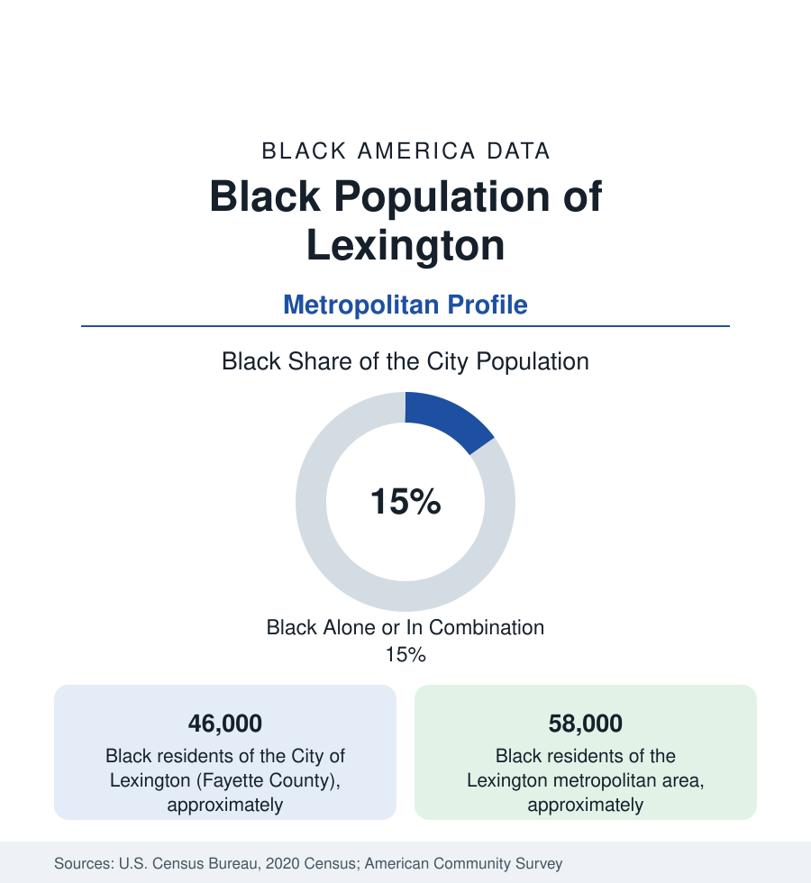

Black Cities
Black Lexington: Horse Country's Other Bloodlines
Lexington holds about 46,000 Black residents in the city and 58,000 across the metro — home to the Black jockeys who ruled the early Derby. The census profile.

Lexington holds about 46,000 Black residents within the consolidated city-county — Black alone or in combination, roughly one resident in seven — and about 58,000 across the metropolitan area. The Bluegrass's Black history runs through the horse: the grooms, trainers, and jockeys who built the thoroughbred industry from slavery forward — Black riders won fifteen of the first twenty-eight Kentucky Derbies, a record the sport spent a century forgetting — and through the East End and Northside neighborhoods where the industry's workforce and the city's Black professional class made their ground.
The East End, Pralltown, and the Horse Districts
The geography gathers north and east of downtown: the East End along Midland and Loudon avenues (the historic heart — the Lyric Theatre on the corner, the Douglass School's ground, the churches of the corridor), Pralltown by the university (one of the oldest Black neighborhoods in the city, settled by freedpeople in the 1860s), the Northside's Aspendale and the public housing file, and the modern spread into the Hamburg and Masterson Station subdivisions of the growth corridors. The Lyric Theatre (opened 1948, the Chitlin' Circuit and first-run house of the East End, restored as a cultural center) anchors the heritage map beside the Isaac Murphy Memorial at the Kentucky Horse Park — the archive's correction to the Derby record, Murphy being the first jockey inducted into the Racing Hall of Fame and a three-time Derby winner from this community. The University of Kentucky's campus borders Pralltown — its expansion history and the neighborhood's preservation a standing file — and Kentucky State University, the HBCU, sits thirty minutes west in Frankfort, the state capital, in the commuter data's two-anchor pattern.
Horses, Hospitals, and the University Payroll
The employment data blend the pastoral and the institutional: the thoroughbred industry itself (the farms of the Bluegrass — Calumet's and Claiborne's regional constellation — the Keeneland sales and race meets, the equine veterinary and breeding workforce in which Black horsemen's families run in generations the stud books parallel), the University of Kentucky and its medical center (the metro's largest employer, UK HealthCare the region's tertiary hub), the state-government commuter tier to Frankfort, Toyota's Georgetown plant (the assembly giant twenty minutes north, the Camry line's thousands), and the logistics and manufacturing of the I-75 corridor. The indicators record the prosperous-region pattern at a smaller share: Black median incomes below the metro's high overall line, poverty concentrated in the historic northern and eastern tracts, homeownership spreading through the growth subdivisions — and the horse industry's modern diversity file (the Ed Brown Society and the industry foundations named for the Black horsemen, placing interns from this community into the business that excluded their grandfathers) as the newest line in the data.
The Cultural and Political File
Lexington's movement file runs through the CORE chapter's downtown lunch-counter sit-ins of 1960 and the long civic life of its Black press and pulpit — and its political data show the dispersed-share pattern of the consolidated government: council districts in the north and east returning Black members across the modern record. The cultural ledger adds the Kentucky Theatre's downtown, the Festival of the Bluegrass's regional draw, and the African Cemetery No. 2 (the burial ground the horsemen and the community's nineteenth century share — its restoration and marker program a completed heritage file) beside the East End's church row. The school data (Fayette County's district, among the state's largest, with its equity office's published gaps) carry the education numbers of a university city whose divides run along the old neighborhood lines.
Change and the Estimates
The estimates show the metro growing on the university, the hospital expansions, and the region's amenity draw — its Black population growing in count in the outer subdivisions and the Jessamine and Scott county suburbs, its share steady at the core — with the East End's reinvestment (the Lyric's district, the Midland corridor plans) and the Horse Park's interpretive turn toward the full record as the current files. The industry's sales pavilions still set the region's economic calendar twice a year, and the community whose hands first made the horses famous is, in the newest data, re-entering the owners' boxes by the scholarship route its own societies built.
Reading the Lexington Numbers
Lexington's 58,000 metro Black residents hold the sport of kings' founding receipts: the Derby's first era was theirs, the farms' knowledge was theirs, and the East End kept the archive when the sport looked away. Horse country's other bloodline is not a footnote to the Bluegrass data. It is half the pedigree.
More in Black Cities
Black Atlanta: Population, Distribution, and Growth of a Black Metropolis
Metro Atlanta holds more than two million Black residents — roughly one in three, second only to New York. The suburban distribution, migration history, and composition of Black Atlanta in the census data.
Black New York: The Largest Black Population in America
The New York metropolitan area holds about 3.4 million Black residents — more than any metro in the nation — and the city itself about two million. The census profile.
Black Washington: The District and the Metro
The Washington metro holds about 1.6 million Black residents, and the District itself — long a majority-Black city — now records a Black share near 41 percent. The census profile.
Source: U.S. Census Bureau, 2020 Census; American Community Survey; Population Estimates Program.